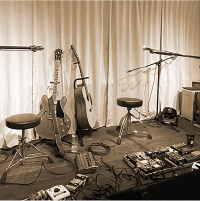

わたしのこと

自己紹介
MORO HANDS
名前はもろかなえといいます。
半世紀以上生きてきて、
大手の会社や家族経営の小さな会社で、
ネットショップ運営や印刷物製作、経理など仕事もさまざま。
「この人と仕事をしたい」という気持ちでなんでもしてきました。
娘を育て、様々な人と関わり…経験だけは豊富です。
あなたも私もハッピーになることが大切で、
関わる人のためなら頑張れる…。
あなたの考えを具現化する、関わる人の想いを形にする、
そんな写し鏡になりたいです。
多趣味です
上手い・下手は別として、いろいろやってます。
-
七宝焼
-
カラーセラピー
-

タロットカード
-
カメラ
-
ギター
-

推し活
夢があります
七宝焼の先生は私の人生の恩師です。
たくさんの事を学ばせてもらっています。
先生は、七宝焼だけでなく絵もたくさん描いておられます。
先生には子供はいませんが、それらは先生の子供のようなもの。
先生はご自身が亡くなった後、作品たちの行方はどうなるか…とても心配されています。
私は、事な先生の、大事な絵を、大事にしてくださる方の手に渡るようお手伝いをしたいと思っています。


連絡ください
こんなわたしです。何かできる？